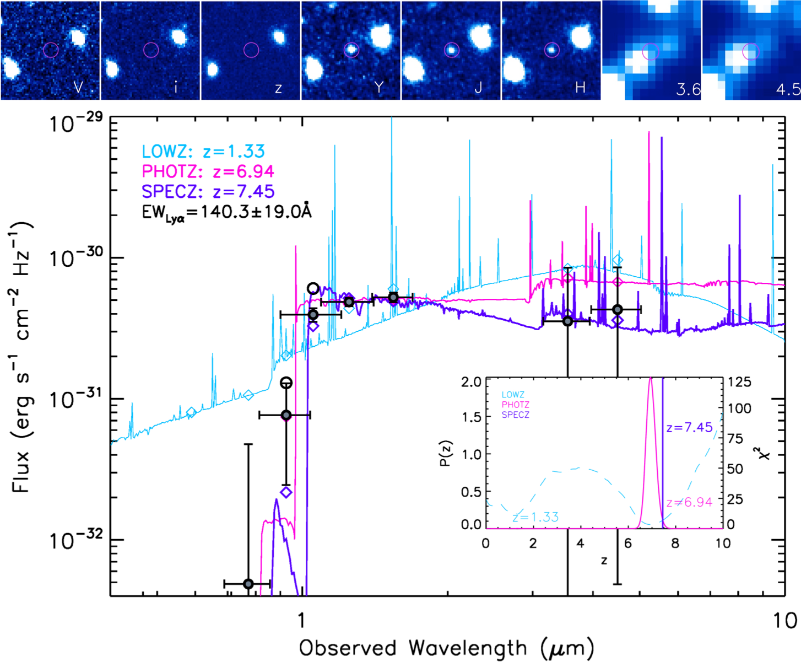

Research
I am a fourth year graduate student working with Prof. Steven Finkelstein, studying reionization-era galaxies. I study galaxies from the first billion years of the Universe's history, and my goal is to understand how those galaxies, and the Universe itself, evolved into the one we live in today.

Islands of Reionization
I am currently leading a Keck Observatory program searching for Lyman-alpha emission in galaxies at redshift 9 (only 500 million years after the Big Bang). I have been awarded a total of 8 nights over 4 semesters (2018-2019) through NASA on the 10m Keck I Telescope. All of this data has been acquired and I am currently in the data-reduction phase.
Searching for Lyman-alpha in the Early Universe
 My master's thesis work was to search for Lyman-Alpha emission from galaxies at the end of the epoch of reionization using grism (slitless spectroscopy) data from the Hubble Space Telescope taken for the Faint Infrared Grism Survey (FIGS). I created an automated line-finding code to search through all of the spectra for the high-redshift candidates in the sample. I successfully detected a Lyman-Alpha line in a galaxy at z=7.452, which is also the highest equivalent-width Lyman-Alpha line above redshift 7. Published paper can be found here!